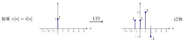
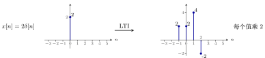
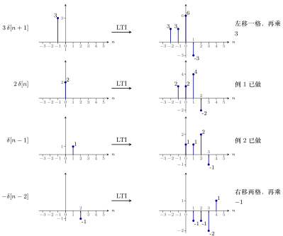
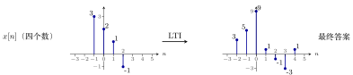
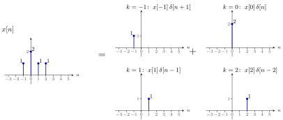
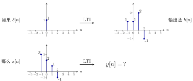
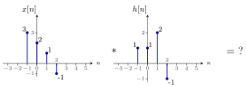
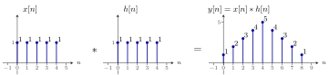
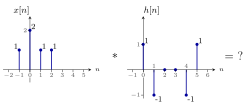
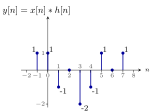

离散 LTI 系统的卷积公式推导¶
浙江大学 2022《信号与系统》（胡浩基）第二章（教材第 45 页 2.2 节）听课笔记
1 从一道画图题出发：已知一对，推另一对¶
已知 \(\delta[n]\) 通过 LTI 系统的输出，求别的输入的输出。难度逐步增加：乘 \(2\)、右移一格、两者相加、输入有四个数；每一步只用一条性质。把同样的做法推广到任意输入，就得到卷积（第 2 节）。
1.1 复习：线性与时不变的定义¶
重点
-
线性系统（对任意输入）：
-
齐次性(homogeneity)：\(x[n]\to y[n]\)，则 \(a\,x[n]\to a\,y[n]\)，\(a\) 是实数；
-
叠加性(superposition)：\(x_1[n]\to y_1[n]\)、\(x_2[n]\to y_2[n]\)，则 \(x_1[n]+x_2[n]\to y_1[n]+y_2[n]\)。
-
-
时不变系统：\(x[n]\to y[n]\)，则 \(x[n-n_0]\to y[n-n_0]\)。离散的坐标必须是整数，所以 \(n_0\) 要规定是整数（\(n_0\in\mathbb{Z}\)）。
1.2 画图题：每次只用一条性质¶
设一个 LTI 系统：\(x[n]\to\boxed{\text{LTI}}\to y[n]\)。已知输入单位脉冲 \(x[n]=\delta[n]\)（只在 \(n=0\) 处为 \(1\)）时的输出 \(y[n]\)：

图 1 已知条件：输出在 \(n=-1,0,1,2\) 处分别是 \(1,1,2,-1\)，其他位置都是 \(0\)。
这个输出后面起名叫单位脉冲响应 \(h[n]\)（第 2 节）。
下面三道题，每题用一条性质，从已知推到未知。
例 1 输入扩大两倍 齐次性
题目：输入 \(x[n]=2\delta[n]\)（在 \(n=0\) 处为 \(2\)），送进同一个 LTI，输出是什么？
解：每个值都乘 \(2\)，下标不变。

依据：齐次性。定义里的 \(x[n]\) 是任意的，当然包含 \(\delta[n]\) 这一种；现在输入乘了 \(2\)（即齐次性里的 \(a=2\)），输出也乘 \(2\)。
注意：不是线性系统就没有这个结论。
例 2 输入右移一格 时不变性
题目：输入 \(x[n]=\delta[n-1]\)（只在 \(n=1\) 处为 \(1\)，也就是把 \(\delta[n]\) 向右挪了一格），送进同一个 LTI，输出是什么？
解：输出也整体右移一格。
依据：时不变性——输入相对原来右移一个单位，输出也右移一个单位。
例 3 两个脉冲相加的输入 叠加性
题目：例 1 用了齐次性，例 2 用了时不变性，这道题用剩下的叠加性：把例 1 和例 2 的输入加起来，即 \(x[n]=2\delta[n]+\delta[n-1]\)（\(n=0\) 处为 \(2\)，\(n=1\) 处为 \(1\)，别处为 \(0\)），送进同一个 LTI，输出是什么？
解：由叠加性，输出就是前两道题输出的和。逐位相加（易错点：先按下标 \(n\) 对齐再相加，否则容易加错）：
| \(n\) | \(-1\) | \(0\) | \(1\) | \(2\) | \(3\) |
|---|---|---|---|---|---|
| 例 1 的输出 \(2h\) | \(2\) | \(2\) | \(4\) | \(-2\) | \(0\) |
| 例 2 的输出（右移一格） | \(0\) | \(1\) | \(1\) | \(2\) | \(-1\) |
| 相加 | \(2\) | \(3\) | \(5\) | \(0\) | \(-1\) |
答案：\(n=-1,0,1,2,3\) 处依次为 \(2,3,5,0,-1\)（范围 \(-1\) 到 \(3\)）。
重点
三道题用三条性质：
例 1：输入乘 \(a\)，输出也乘 \(a\) \(\Rightarrow\) 齐次性。
例 2：输入右移 \(n_0\)，输出也右移 \(n_0\) \(\Rightarrow\) 时不变性。
例 3：输入相加，输出也相加 \(\Rightarrow\) 叠加性。
1.3 加难度：输入有四个数¶
例 4 四点输入经过同一个 LTI 拆成脉冲再相加
这类题不难，只是繁琐，难在又快又对；快速的做法见第 3、4 节。
题目：\(x[n]\) 在 \(n=-1,0,1,2\) 处分别是 \(3,2,1,-1\)，送进同一个 LTI 系统（\(\delta[n]\) 的输出是 \(n=-1..2\) 处的 \(1,1,2,-1\)），输出 \(y[n]\) 是什么？
▸ 做法：把输入拆成四个脉冲。 输入有四个非零的数，把它拆成四个脉冲的和：
然后每一个脉冲单独过 LTI（用齐次性和时不变性），最后把四个输出加起来（用叠加性）：

图 2 四个脉冲各自通过同一个 LTI 的输出（各行纵向缩放不同）。
其中 \(2\delta[n]\) 和 \(\delta[n-1]\) 已有现成结果（例 1、例 2），直接引用；要新做的是另外两个。
▸ 确定范围。 四个输出加起来，最左边有值的地方是四个最左边里的最小值：\(-1,\,-1\,(\text{来自}2\delta),\,0,\,1\) 以及新做的 \(-2\)，所以最左是 \(n=-2\)；最右边是 \(1,2,3,4\) 里最大的，所以最右是 \(n=4\)。因此 \(y[n]\) 只在 \(n=-2\) 到 \(4\) 有值。
▸ 逐点相加。
| \(n\) | \(-2\) | \(-1\) | \(0\) | \(1\) | \(2\) | \(3\) | \(4\) |
|---|---|---|---|---|---|---|---|
| \(3\delta[n+1]\) 的输出 | \(3\) | \(3\) | \(6\) | \(-3\) | \(0\) | \(0\) | \(0\) |
| \(2\delta[n]\) 的输出 | \(0\) | \(2\) | \(2\) | \(4\) | \(-2\) | \(0\) | \(0\) |
| \(\delta[n-1]\) 的输出 | \(0\) | \(0\) | \(1\) | \(1\) | \(2\) | \(-1\) | \(0\) |
| \(-\delta[n-2]\) 的输出 | \(0\) | \(0\) | \(0\) | \(-1\) | \(-1\) | \(-2\) | \(1\) |
| 相加 \(y[n]\) | \(\mathbf{3}\) | \(\mathbf{5}\) | \(\mathbf{9}\) | \(\mathbf{1}\) | \(\mathbf{-1}\) | \(\mathbf{-3}\) | \(\mathbf{1}\) |
结果是 \(3,5,9,1,-1,-3,1\)。

图 3 这道题的输入（左）和最后的输出（右）。输入只有 4 个点，输出有 7 个点，两端各变长了。
说明
三个值得记下来的观察：
-
输入有 4 个点、\(h[n]\) 也有 4 个点，输出却有 \(4+4-1=7\) 个点。这个规律在列表法一节总结为「最左边相加、最右边相加」（见第 3 节）。
-
这样算肯定能做出来，只是复杂，而且很容易犯错。第 3、4 节讲不容易犯错的简单方法。
-
做法只有三步：拆成脉冲 \(\to\) 每个脉冲单独过系统 \(\to\) 加起来。把这三步推广到任意输入，就是卷积（第 2 节）。
2 从这道题推广到卷积¶
例 4 的做法只有三步：拆成脉冲 \(\to\) 每个脉冲单独过系统 \(\to\) 加起来。下面把这三步推广到任意输入。
2.1 第一步：单位脉冲响应 \(h[n]\)¶
先定义两个名字：
-
\(x[n]=\delta[n]\) 叫单位脉冲序列(unit impulse sequence，见第一章)。
-
把它输入 LTI 系统，得到的输出 \(y[n]\) 有专门的名字：
重点
单位脉冲响应(unit impulse response)，记作 \(h[n]\)：它是 \(\delta[n]\) 通过这个线性时不变系统得到的输出。
\(h[n]\) 是一个非常特殊的输出：只要知道了 \(h[n]\)，对任意一个其他的信号输入这个 LTI 系统，都能算出它的 \(y[n]\)。正因为它这么特殊，才给它一个专门的名字。
所以对 LTI 系统来说，「知道一个输入对应的输出，就知道所有输入对应的输出」里的那「一个」，就是 \(\delta\) 对应的 \(h\)。
2.2 第二步：任意输入都能拆成脉冲的和¶
例 4 的输入就是这样拆的：\(x[n]=3\delta[n+1]+2\delta[n]+\delta[n-1]-\delta[n-2]\)。再看一个例子：第 3 节例 2 的 \(x[n]\)，\(n=-1,0,1,2\) 处分别是 \(1,2,1,1\)，它等于
对照公式看：
| \(k\) | \(\delta[n-k]\)（脉冲在哪里） | 这一项的系数 | 系数等于 |
|---|---|---|---|
| \(-1\) | \(\delta[n+1]\) | \(x[-1]\) | \(1\) |
| \(0\) | \(\delta[n]\) | \(x[0]\) | \(2\) |
| \(1\) | \(\delta[n-1]\) | \(x[1]\) | \(1\) |
| \(2\) | \(\delta[n-2]\) | \(x[2]\) | \(1\) |
两个式子意思完全一样，只是把具体的数用抽象的 \(x[k]\)、\(\delta[n-k]\) 代替。可以这样理解：\(\delta[n-k]\) 是把脉冲挪到第 \(k\) 个位置，再乘上第 \(k\) 个位置上的值 \(x[k]\)，然后把所有位置加起来。

图 4 把 \(x[n]\) 拆成脉冲的和：左边是 \(x[n]\)，右边是四个单独的脉冲（每个脉冲的高度就是 \(x[k]\)）。把右边四张图相加，就得到左边。
2.3 第三步：三行推导，得到卷积¶
▸ 卷积。
符号 \(\ast\) 叫卷积(convolution)。\(y[n]\) 就是用那套较复杂的算法（把输入拆成脉冲、逐个过系统、再加起来，即例 4 的做法）算出来的，写成 \(x[n]\ast h[n]\)。
▸ 三行推导。
| 输入 | 输出 | 用的是哪条性质 |
|---|---|---|
| \(\delta[n]\) | \(h[n]\) | \(h[n]\) 的定义（单位脉冲响应） |
| \(\delta[n-k]\) | \(h[n-k]\) | 时不变性：输入右挪 \(k\) 格，输出也右挪 \(k\) 格 |
| \(x[k]\,\delta[n-k]\) | \(x[k]\,h[n-k]\) | 线性系统的齐次性：输入乘 \(x[k]\)，输出也乘 \(x[k]\) |
| \(\displaystyle\sum_{k=-\infty}^{+\infty}x[k]\,\delta[n-k]\) | \(\displaystyle\sum_{k=-\infty}^{+\infty}x[k]\,h[n-k]\) | 线性系统的叠加性：输入全部加起来，输出也全部加起来 |
最后一行的左边，由第二步，就是 \(x[n]\)。再根据卷积的定义（\(\delta[n]\) 的输出是 \(h[n]\)，则 \(x[n]\) 通过同一个 LTI，输出是 \(x[n]\ast h[n]\)），所以
证毕。
重点
这个证明就是第 1 节例 1–3 那三道题的「一般化」：时不变性（右挪）\(+\) 齐次性（乘系数）\(+\) 叠加性（相加）。这一步相对于上一步，仅仅是把所有的 \(k\) 加在了一起。
▸ 卷积公式。 上面推出的式子就是卷积计算公式（教材式 2-32）：
重点
这就是卷积的定义式。有了它，就有了另一种算卷积的方法，叫卷积公式法（见第 4 节）。
2.4 同一道题的两种问法¶
同一道题有两种问法，数据就是例 4 那道。
第一种（原始问法，要画三张图）：如果 \(\delta[n]\) 通过 LTI 的输出是 \(h[n]\)，那么这个 \(x[n]\) 通过同一个 LTI，输出是什么？

第二种（有了新名词以后）：直接问 \(x[n]\ast h[n]\) 等于什么。

图 5 第二种问法：直接求 \(x[n]\ast h[n]\)。它和上一张图的第一种问法是同一道题。
两种出题方式完全一样。看到第二种写法，应当想到：它的意思是——如果 \(\delta[n]\) 的响应是 \(h[n]\)，那么 \(x[n]\) 的响应是什么？答案是 \(y[n]=x[n]\ast h[n]\)。后面会用第二种出题方式，但第一种才是这个问题的本质。
卷积的简便算法（教材 2.2 节）见第 3、4 节。
2.5 推论：\(h[n]\) 是 LTI 系统唯一的标识¶
有了 \(h[n]\) 和卷积这两个名字，先看两道判断题。
▸ 判断题 A。 如果两个 LTI 系统的 \(h[n]\)（单位脉冲响应）一样，那么这两个 LTI 系统是完全一样的。对还是错？
答案：对。换一种问法：如果两个 LTI 系统的 \(h[n]\) 一样，那么对于任何输入，这两个系统的输出都一样——这句话是对的。（因为输出 \(=x\ast h\)，\(h\) 一样就一样。）
两个系统对任意输入的输出都一样，它们是同一个系统吗？按信号与系统这门工程学科的理解：如果两个系统的输入输出一样，它们就是一样的，因为没有别的办法证明它们不一样。
重点
\(h[n]\) 是 LTI 系统唯一的标识。一个 LTI 系统所有的特点，都集中在 \(h[n]\) 这一个序列里。
▸ 判断题 B（换一种问法）。 如果两个系统的 \(h[n]\) 一样，那么这两个系统的输入输出都一样。对吗？这句话比刚才那句少了哪个条件？
答案：少了「LTI」这个前提，所以不对。\(h[n]\) 是线性时不变系统的唯一标识，不是所有系统的唯一标识。原因是上面「证明」里用到的三条性质：
-
用的是线性的齐次性（乘 \(a\) 倍）；
-
用的是时不变性（平移）；
-
用的是线性的叠加性（相加）。
这三条都是 LTI 系统才有的。如果不是 LTI，这些推导全是错的，这个题就做不出来。对一个不是 LTI 的系统，\(h[n]\) 不过就是「\(\delta[n]\) 这个输入对应的输出」，没有什么特殊地位，只是一个普通的输入对应的输出。只有在 LTI 系统里，\(h[n]\) 才特殊。
3 第一种算法：列表法¶
算 \(x[n]\ast h[n]\) 有两种方法，先讲第一种：列表法。仍用前面那道题（第 1 节的例 4：\(x=(3,2,1,-1)\) 在 \(n=-1..2\)，\(h=(1,1,2,-1)\) 在 \(n=-1..2\)）。步骤： ①确定 \(y[n]=x[n]\ast h[n]\) 的取值范围； ②列表； ③竖着加。
3.1 方法：三步¶
▸ 第一步：确定 \(y[n]\) 有值的范围。
重点
\(y[n]\) 的最左边 \(=\) \(x[n]\) 的最左边 \(+\) \(h[n]\) 的最左边；
\(y[n]\) 的最右边 \(=\) \(x[n]\) 的最右边 \(+\) \(h[n]\) 的最右边。
这道题里：最左边 \((-1)+(-1)=-2\)，最右边 \(2+2=4\)，所以 \(y[n]\) 只在 \(n=-2\) 到 \(4\) 有值。为什么这样，见下一小节「证明」。
▸ 第二步：列表。 表格最上面一行写 \(h[n]\) 的值 \(1,1,2,-1\)，最左边一列竖着写 \(x[n]\) 的值 \(3,2,1,-1\)，格子里填乘积：
-
把 \(h[n]\) 从左抄到右写在最上面一行：\(1,1,2,-1\)。
-
拿 \(x\) 最左边的数 \(3\)，去乘上面 \(h\) 的每一个：\(3\times(1,1,2,-1)=(3,3,6,-3)\)，写在下面一行，和 \(h\) 的位置对齐。
-
拿 \(x\) 的第二个数 \(2\)，同样去乘 \(h\) 的每一个，得 \((2,2,4,-2)\)。但是：这个 \(2\) 在 \(x\) 里比刚才那个 \(3\) 又往右挪了一位，所以这一行的乘积也要又往右挪一位再写。
-
第三个数 \(1\)：它比 \(3\) 往右挪了两位，所以 \((1,1,2,-1)\) 要往右挪两位。
-
第四个数 \(-1\)：往右挪三位，得 \((-1,-1,-2,1)\)。
| \(y[n]\) 的下标 \(n\) | |||||||
| \(-2\) | \(-1\) | \(0\) | \(1\) | \(2\) | \(3\) | \(4\) | |
| \(h\)（从左抄到右，对齐第一行） | \(1\) | \(1\) | \(2\) | \(-1\) | |||
| \(3\times h\) | \(3\) | \(3\) | \(6\) | \(-3\) | |||
| \(2\times h\)（右挪 1 位） | \(2\) | \(2\) | \(4\) | \(-2\) | |||
| \(1\times h\)（右挪 2 位） | \(1\) | \(1\) | \(2\) | \(-1\) | |||
| \(-1\times h\)（右挪 3 位） | \(-1\) | \(-1\) | \(-2\) | \(1\) | |||
| 竖着加 | \(\mathbf{3}\) | \(\mathbf{5}\) | \(\mathbf{9}\) | \(\mathbf{1}\) | \(\mathbf{-1}\) | \(\mathbf{-3}\) | \(\mathbf{1}\) |
▸ 第三步：竖着加。 注意：不要把最上面那一行（\(h\)）也加进去，它只是抄下来的参考行；只加下面四行。然后从最左边 \(n=-2\) 开始，依次读出：\(3,5,9,1,-1,-3,1\)。
3.2 证明：为什么这样做是对的¶
说明
这一张表和第 1 节例 4 里的「拆成四个脉冲」是同一件事。那道例题里四个输出行，每行是「\(x\) 的某个值 \(\times\) \(h\)（平移过的）」；这里的四行一模一样，只是摆成了表格。表格只是把那套复杂算法用简洁的形式重做了一遍，每一步都与拆脉冲的做法一一对应。
▸ 范围规则为什么是对的。 列表法唯一需要解释的是第一步：为什么 \(y\) 的最左边是 \(x\) 的最左边加 \(h\) 的最左边？
-
\(x[n]=\delta[n]\) 时，输出是 \(h[n]\)。\(h[n]\) 的最左边，相对于 \(0\) 是向左挪了「\(h\) 的最左边」那么多；
-
现在 \(x[n]\) 的最左边那个脉冲，本来就比 \(0\) 挪了「\(x\) 的最左边」那么多，它送进系统，输出（时不变性）也整体挪了这么多；
-
所以 \(y\) 的最左边，相对于 \(0\)，就是「\(h\) 的最左边」加上「\(x\) 的最左边」。最右边同理。
3.3 例题¶
例 1 教材例 2-7：两个五点全 1 序列 结果像座小山
题目：\(x[n]\) 在 \(n=0..4\) 都是 \(1\)，\(h[n]\) 也在 \(n=0..4\) 都是 \(1\)，求 \(y[n]=x[n]\ast h[n]\)。

图 6 例 2-7 的题目和答案（右边是答案，纵向缩放和左边不同）。
做法：
-
范围：最左边 \(0+0=0\)，最右边 \(4+4=8\)，所以 \(n=0..8\) 有值；
-
列表：\(x\) 的每个 \(1\) 乘 \(h\) 得到「5 个 \(1\)」，第一个 \(1\) 不挪，第二个右挪 1 位，……第五个右挪 4 位；
-
竖着加，得到 \(1,2,3,4,5,4,3,2,1\)，即 \(n=0,1,\dots,8\) 处分别是 \(1,2,3,4,5,4,3,2,1\)。
结果形状像一座小山。
例 2 四点序列卷六点序列（教材第 79 页） 结果 9 个点
题目（该页第一排三张图的中间一道）：\(x[n]\) 在 \(n=-1,0,1,2\) 处分别是 \(1,2,1,1\)；\(h[n]\) 在 \(n=0,1,2,3,4,5\) 处分别是 \(1,-1,0,0,-1,1\)。求 \(y[n]=x[n]\ast h[n]\)。

图 7 题目：\(h[n]\) 在 \(n=2,3\) 处是 \(0\)。
答案：范围 \(n=-1..7\)，依次是 \(1\)、\(1\)、\(-1\)、\(0\)、\(-2\)、\(-1\)、\(1\)、\(0\)、\(1\)。

图 8 答案：\(y[n]\) 在 \(n=-1..7\) 共 9 个点。
▸ 换一种出题方式：把序列写成脉冲的和。 同一道题也可能写成脉冲和的形式：
这和上面那道题是同一道题。\(\delta[n-m]\) 就是「在 \(n=m\) 处放一个 \(1\)」，前面的系数就是那一点的值。只要理解 \(\delta\) 的性质和左右移的写法，它就是同一道题。
例 3 无限长的序列：教材例 2-6 找规律
题目：\(x[n]=a^n u[n]\)，\(h[n]=u[n]\)，求 \(y[n]=x[n]\ast h[n]\)。其中 \(u[n]\) 是单位阶跃序列(unit step sequence)：\(n\ge0\) 时为 \(1\)，\(n\lt{}0\) 时为 \(0\)。要有解，需要 \(|a|\lt{}1\)。
\(x\) 和 \(h\) 都是无限长时，列表法仍然可以用：把前几项算出来，总结规律，再写出统一的表达式。
▸ 步骤。
-
先把 \(x\) 和 \(h\) 大致画出来：\(x[n]\) 在 \(n\lt{}0\) 时是 \(0\)，\(n\ge0\) 时是 \(1,a,a^2,a^3,\dots\)（\(a^n u[n]\) 里 \(u[n]\) 把负半边「切掉」）；\(h[n]=u[n]\) 是 \(n\ge0\) 时一直是 \(1\) 的序列。
-
范围：最左边 \(0+0=0\)，最右边 \(+\infty\)，所以 \(y[n]\) 在 \(n\ge0\) 有值。
-
列表：这张表向右、向下都无限延伸。\(x\) 的第一个数 \(1\) 乘 \(h\)：一行全是 \(1\)；第二个数 \(a\)，右挪一位，一行全是 \(a\)；第三个数 \(a^2\)，再右挪一位，一行全是 \(a^2\)；……
-
先加前几项找规律：竖着加，
\(n\) 竖着加的结果 \(0\) \(1\) \(1\) \(1+a\) \(2\) \(1+a+a^2\) \(3\) \(1+a+a^2+a^3\) -
写成统一的式子：\(n\ge0\) 时 \(y[n]=1+a+a^2+\cdots+a^n\)。但 \(n\lt{}0\) 时应该是 \(0\)，所以前面要乘一个 \(u[n]\)（乘上后 \(n\lt{}0\) 时全为 \(0\)）：
\[ y[n]=\bigl(1+a+a^2+\cdots+a^n\bigr)u[n]. \] -
用等比数列求和公式化简（分子分母同乘 \(1-a\)，\((1-a)(1+a+\cdots+a^n)=1-a^{n+1}\)）：
\[ y[n]=\frac{1-a^{n+1}}{1-a}\,u[n]. \]
写成上一步（未化简）的形式也正确。学完第 4 章和第 7 章之后，用傅里叶变换和 \(z\) 变换会非常快；用找规律的办法也不难。
▸ 两个思考题：卷积的长度与计算量。 例 4 卷积后序列有多长？ \(N_1+N_2-1\)
题目：若 \(x[n]\) 的长度是 \(N_1\)（即非零值连续排列、共 \(N_1\) 个），\(h[n]\) 的长度是 \(N_2\)，问 \(y[n]=x[n]\ast h[n]\) 的长度是多少？
解：举个例子即可。设 \(x[n]\) 在 \(0\) 到 \(N_1-1\) 有值（长度正好是 \(N_1\)），\(h[n]\) 在 \(0\) 到 \(N_2-1\) 有值，用「最左加最左，最右加最右」，\(y[n]\) 在 \(0\) 到 \((N_1-1)+(N_2-1)=N_1+N_2-2\) 有值，所以长度是
重点
长度 \(N_1\) 的序列和长度 \(N_2\) 的序列卷积，结果的长度是 \(N_1+N_2-1\)。
起点不一定是 \(0\)，换别的起点长度也一样。检查：第 1 节例 4 那道题 \(4+4-1=7\)，正好是 \(n=-2..4\) 共 7 个点；例 2-7 是 \(5+5-1=9\) 个点。
例 5 列表法要算多少次加法、多少次乘法？ \(O(N^2)\)
题目：\(x[n]\) 长度为 \(N\)，\(h[n]\) 长度也为 \(N\)，用列表法算 \(y[n]=x[n]\ast h[n]\)，需要多少次加法、多少次乘法？
用 \(N=4\) 的那张表来数：
-
乘法：表里每个格子都是一次乘法，有 \(N\) 行、每行 \(N\) 个，共 \(N^2\) 次乘法；
-
加法：竖着加，每一列要加几次，看那一列有几个数：从左到右，各列需要的加法次数是 \(0,1,2,3,2,1,0\)（头尾两列只有一个数，不用加）。即 \(1+2+3+2+1\)，对 \(N\) 来说就是
\[ 1+2+\cdots+(N-1)+(N-2)+\cdots+1=(N-1)^2. \]当 \(N=4\) 时是 \(9\)。
所以用列表法做卷积，计算复杂度是 \(O(N^2)\)（加法和乘法的次数大致正比于 \(N^2\)）。
▸ 能不能把加法和乘法的次数减少？ 能。Cooley 和 Tukey（1965 年）提出的快速傅里叶变换(fast Fourier transform，FFT)，把卷积的计算复杂度从 \(O(N^2)\) 降到 \(O(N\log N)\)，第四章会学。这是信号处理领域非常重要的发现，初看却很反直觉：加法和乘法从哪里省下来，并不明显。
▸ 差距有多大。 实际用卷积时，序列常有几万、几十万甚至几百万长。取 \(N=10^5\)：
| 算法 | 次数（数量级） | |
|---|---|---|
| 列表法 | \(N^2\) | \((10^5)^2=10^{10}\) |
| FFT | \(N\log N\) | \(10^5\log10^5=5\times10^5\) |
\(N\) 越大，差距越大。（这里 \(\log\) 取以 \(10\) 为底，\(\log10^5=5\)；\(O(N\log N)\) 里底数不影响数量级。）
4 第二种算法：卷积公式法¶
4.1 概念¶
用卷积公式还有另一种算法，叫卷积公式法。分四步（教材分五步，这里合为四步）：
翻转 平移 相乘 求和
▸ 用卷积公式法要注意的两点。
重点
-
这里翻转 \(h[n]\)。也可以翻转 \(x[n]\)，因为卷积具有交换性（后面证明）。
-
翻转谁，就平移谁，不要反过来。翻转 \(h\) 就平移 \(h\)；翻转 \(x\) 就平移 \(x\)。若翻转 \(h\) 却去平移 \(x\)，就错了。
4.2 证明：四步从哪里来¶
把公式里的 \(h[n-k]\) 稍微变一下形：\(n-k=-(k-n)\)，所以
四步与公式的对应：
| 步骤 | 在公式里在哪里 | 意思 |
|---|---|---|
| 翻转 | \(h[\,\textbf{-}(k-n)]\) 里的负号 | 把 \(h[k]\) 左右翻过来，变成 \(h[-k]\)（从右抄到左） |
| 平移 | \(h[-(k-\textbf{n})]\) 里的 \(n\) | 右移 \(n\) 个单位（减号表示右移；\(n\) 为负数时，右移 \(n\) 个单位等于左移 \(\vert{}n\vert{}\) 个单位） |
| 相乘 | \(x[k]\cdot h[\cdots]\) 两个相乘 | 翻转并平移后的 \(h\)，和 \(x[k]\) 逐点相乘 |
| 求和 | \(\displaystyle\sum_{k}\) | 把所有乘积加起来，得到 \(y[n]\) 在这一个 \(n\) 的值 |
这里的「翻转」和「平移」，就是第一章「信号的自变量变换」里讲的那一套。
4.3 例题¶
例 1 用公式法重做四点输入的题 与列表法一致
题目（即第 1 节例 4）：\(x[n]=(3,2,1,-1)\) 在 \(n=-1..2\)，\(h[n]=(1,1,2,-1)\) 在 \(n=-1..2\)，求 \(x[n]\ast h[n]\)。
▸ 第一步，和列表法完全一样：确定范围。 \(y\) 的最左边 \((-1)+(-1)=-2\)，最右边 \(2+2=4\)，所以 \(n=-2..4\) 有值。关键是后面这些值怎么算。
▸ 第二步：把 \(h\) 翻转。 \(h[n]\) 从左抄到右是 \(1,1,2,-1\)；翻转的意思是把它从右抄到左，也就是 \(h[-n]\)：从左到右写是 \(-1,2,1,1\)。
▸ 第三步：不断平移、相乘、求和。 把 \(x\) 从左抄到右写好（\(3,2,1,-1\)），再把翻转过的 \(h\)（\(-1,2,1,1\)）一格一格往右挪，每挪一格，就把重合在一起的数两两相乘再相加，得到 \(y\) 在这一个位置的值：
| \(n\) | 重合的数（上面 \(x\)，下面翻转后的 \(h\)） | 乘积 | 相加 |
|---|---|---|---|
| \(-2\) | \(3\) 和 \(1\) | \(3\times1\) | \(3\) |
| \(-1\) | \(3,2\) 和 \(1,1\) | \(3\times1+2\times1\) | \(5\) |
| \(0\) | \(3,2,1\) 和 \(2,1,1\) | \(3\times2+2\times1+1\times1\) | \(9\) |
| \(1\) | \(3,2,1,-1\) 和 \(-1,2,1,1\) | \(3\times(-1)+2\times2+1\times1+(-1)\times1\) | \(1\) |
| \(2\) | \(2,1,-1\) 和 \(-1,2,1\) | \(2\times(-1)+1\times2+(-1)\times1\) | \(-1\) |
| \(3\) | \(1,-1\) 和 \(-1,2\) | \(1\times(-1)+(-1)\times2\) | \(-3\) |
| \(4\) | \(-1\) 和 \(-1\) | \((-1)\times(-1)\) | \(1\) |
（\(n=-2\) 时：翻转的 \(h\) 最右边的 \(1\) 和 \(x\) 最左边的 \(3\) 对上；每挪一格，多一个数重合，直到 4 个全重合，再逐渐退出。）
结果是 \(3,5,9,1,-1,-3,1\)，和列表法、和第 1 节例 4 的蛮力法完全一样，正是公式所描述的内容。
▸ 用公式法重做例 2-7、例 2-6。 例 2 教材例 2-7（公式法） 与列表法一致
这次题目写成
\(u[n]\) 从 \(0\) 起一直是 \(1\)，\(u[n-5]\) 从 \(5\) 起一直是 \(1\)，相减只剩 \(n=0..4\) 的 5 个 \(1\)——就是例 2-7。
-
范围 \(n=0..8\)；
-
\(h\) 翻转后还是 5 个 \(1\)（所以 \(h[-n]\) 也是 5 个 1）；
-
往右挪：\(n=0\) 时只有一个 \(1\) 对上，得 \(1\)；右挪 1 格，两对，得 \(2\)；……右挪 4 格，五对全重合，得 \(5\)；再往右，重合数逐渐减少，\(4,3,2,1\)。
得到的结果和列表法的 \(1,2,3,4,5,4,3,2,1\) 一致。
例 3 教材例 2-6（公式法） 与列表法一致
\(x[n]=a^nu[n]\)，\(h[n]=u[n]\)。范围 \(n\ge0\)；把 \(h\) 翻转，往右挪，\(n=0\) 时只有 \(x[0]=1\) 一项，\(n=1\) 时 \(1+a\)，\(n=2\) 时 \(1+a+a^2\)，……得到的规律
和列表法一样。核心就是翻转、平移、相乘、求和，即卷积公式本身。
5 列表法和卷积公式法，哪个更好？¶
两种方法都能算出正确结果，用哪一种都可以。两者各有优劣：
-
列表法更快：不需要「翻转以后再写」。
-
但列表法有个最大的问题：错了一个数，基本上整张表都错。
-
卷积公式法是一个一个算：比如 \(y[0]\) 算错，\(y[1]\)、\(y[2]\) 仍可能算对。
一个有意思的观察：在人看来，列表法和卷积公式法各有优劣；在计算机眼里，是同一个方法。两种方法加法和乘法的次数完全一样，只是顺序不同，所以时间复杂度也一样。
说明
为什么是同一个方法：两种方法都要把每个 \(x[k]\) 和每个 \(h[m]\) 配一次对、乘一次（共 \(N^2\) 次乘法），再把落在同一个 \(n=k+m\) 上的乘积加起来。列表法是「一行一行乘，最后竖着加」，卷积公式法是「一个 \(n\) 一个 \(n\) 地乘再加」，只是先算哪个、后算哪个不一样。